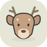

<!doctype html><html lang="zh-CN"><meta charset="utf-8"><meta name="viewport" content="width=device-width,initial-scale=1"><title>NexBot · 20 位小伙伴</title><style>*{box-sizing:border-box}body{margin:0;background:#f8f7f3;color:#343a3b;font-family:"Segoe UI","Microsoft YaHei",sans-serif;padding:52px 64px}header{display:flex;justify-content:space-between;align-items:flex-end;border-bottom:1px solid #deded5;padding-bottom:26px;margin-bottom:30px}.eyebrow{font-size:11px;letter-spacing:3px;color:#81877b}h1{font-size:34px;letter-spacing:-1px;margin:12px 0 0;font-weight:600}header p{font-size:12px;line-height:1.8;color:#7b8177;text-align:right;margin:0}.grid{display:grid;grid-template-columns:repeat(5,1fr);gap:20px}article{position:relative;display:flex;align-items:center;flex-direction:column;padding:18px 8px 17px;border-radius:20px;background:#fff;border:1px solid #e9e8e1}article>img{width:112px;height:112px}article>div{text-align:center;margin-top:13px}strong{display:block;font-size:14px;font-weight:550}small{display:block;font-size:9px;letter-spacing:1.4px;color:#92978b;margin-top:5px}.number{position:absolute;left:13px;top:12px;font-size:10px;color:#b1b5aa;font-variant-numeric:tabular-nums}footer{margin-top:27px;border-top:1px solid #deded5;padding-top:20px;display:flex;align-items:center;gap:18px}footer p{flex:0 0 94px;font-size:11px;color:#858b7d;line-height:1.6}.small{display:flex;gap:9px;flex-wrap:wrap}.small img{width:32px;height:32px}@media(max-width:700px){body{padding:24px}.grid{grid-template-columns:repeat(4,1fr);gap:8px}article>img{width:60px;height:60px}header p{display:none}}</style><header><div><span class="eyebrow">NEXBOT / COMPANIONS VOL. 01</span><h1>20 位小伙伴，各有各的可爱。</h1></div><p>原创矢量头像 · 柔和配色 · 清晰轮廓<br>为每一位 Agent 选一个新形象</p></header><section class="grid"><article><span class="number">01</span><div><strong>赤狐</strong><small>FOX</small></div></article><article><span class="number">02</span><div><strong>知更</strong><small>OWL</small></div></article><article><span class="number">03</span><div><strong>芝麻</strong><small>CAT</small></div></article><article><span class="number">04</span><div><strong>麦芽</strong><small>BEAR</small></div></article><article><span class="number">05</span><div><strong>棉朵</strong><small>RABBIT</small></div></article><article><span class="number">06</span><div><strong>吐司</strong><small>DOG</small></div></article><article><span class="number">07</span><div><strong>竹白</strong><small>PANDA</small></div></article><article><span class="number">08</span><div><strong>尤加</strong><small>KOALA</small></div></article><article><span class="number">09</span><div><strong>橘山</strong><small>TIGER</small></div></article><article><span class="number">10</span><div><strong>林间</strong><small>DEER</small></div></article><article><span class="number">11</span><div><strong>南极</strong><small>PENGUIN</small></div></article><article><span class="number">12</span><div><strong>海盐</strong><small>SEAL</small></div></article><article><span class="number">13</span><div><strong>栗子</strong><small>OTTER</small></div></article><article><span class="number">14</span><div><strong>墨墨</strong><small>OCTOPUS</small></div></article><article><span class="number">15</span><div><strong>青禾</strong><small>FROG</small></div></article><article><span class="number">16</span><div><strong>小钛</strong><small>ROBOT</small></div></article><article><span class="number">17</span><div><strong>阿波罗</strong><small>ASTRONAUT</small></div></article><article><span class="number">18</span><div><strong>星芒</strong><small>STAR</small></div></article><article><span class="number">19</span><div><strong>云团</strong><small>CLOUD</small></div></article><article><span class="number">20</span><div><strong>芽芽</strong><small>SPROUT</small></div></article></section><footer><p>32 px 实际尺寸<br>联系人列表预览</p><div class="small"></div></footer></html>